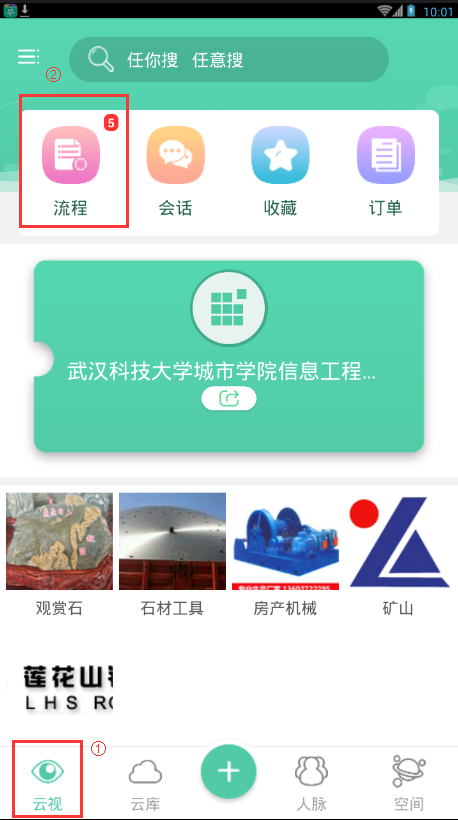
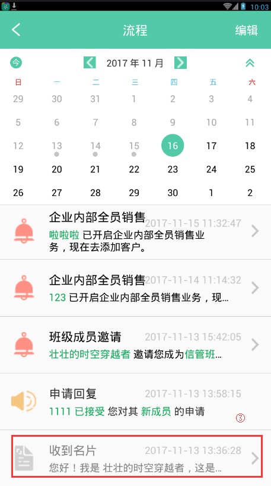
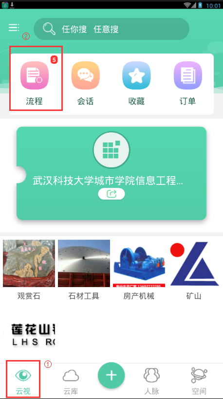
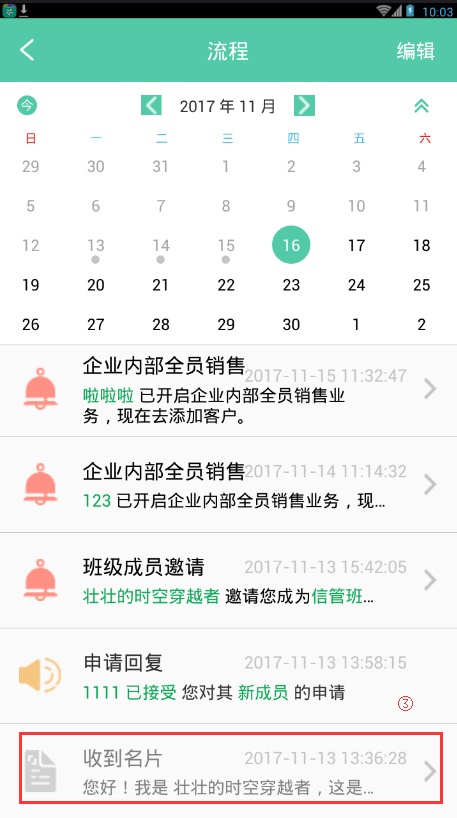

8. 如何处理互换名片请求？
1. 导航栏中点击"云视"，进入云视主页面。如果有未处理的新申请或提醒，"流程"图标右上角会有数字提醒。
2. 点击"流程"，进入流程页面。
3. 单击互换名片请求消息，进入到处理页面。
- 注：点击【拒绝】，拒绝对方的添加申请。
- 点击【同意】，同意对方的添加申请，双方均添加到对方的人脉中。
1. 导航栏中点击"云视"，进入云视主页面。如果有未处理的新申请或提醒，"流程"图标右上角会有数字提醒。
2. 点击"流程"，进入流程页面。
3. 单击互换名片请求消息，进入到处理页面。